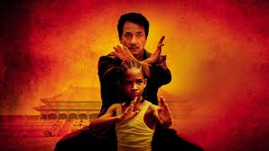

The Karate Kid (2010) follows Dre Parker, a 12-year-old boy who moves from Detroit to Beijing, China, with his mother after she gets a new job. Struggling to adjust to a new culture, language, and school, Dre quickly finds himself feeling isolated and out of place. His problems worsen when he becomes the target of bullying by a group of skilled kung fu students led by Cheng. Dre’s life begins to change when he meets Mr. Han, the quiet maintenance man in his apartment building. Mr. Han reveals himself to be a highly trained kung fu master and agrees to teach Dre how to defend himself. Unlike traditional training, Mr. Han focuses on discipline, patience, balance, and respect, emphasizing that martial arts are about self-control rather than aggression. As Dre trains, he not only learns kung fu techniques but also gains confidence and emotional strength. Mr. Han helps Dre face his fears, process personal loss, and understand the importance of perseverance. With his mentor’s guidance and the support of his friend Meiying, Dre enters a kung fu tournament where he must face his bullies and prove his growth. The film concludes with Dre demonstrating courage, honor, and resilience, showing that true strength comes from character and determination, not just physical ability.
Email the fan site creator: grimesd5475@student.faytechcc.edu